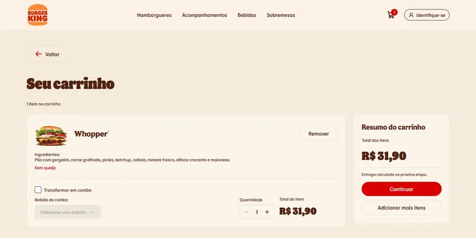
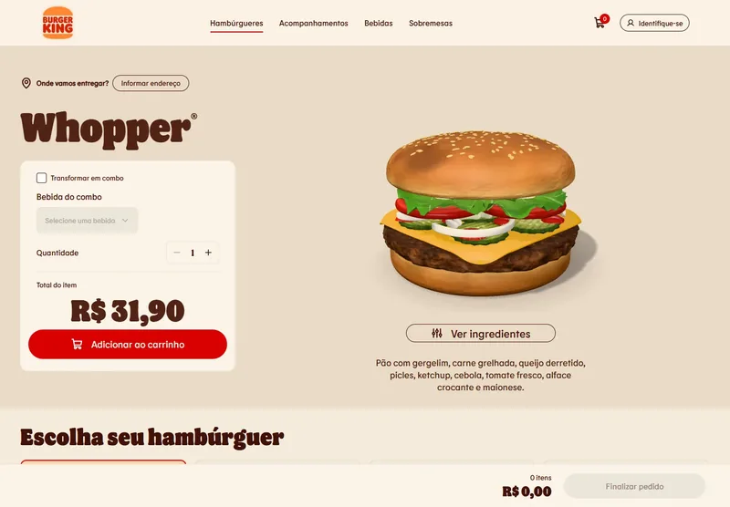
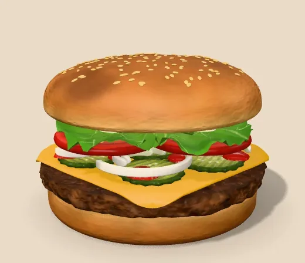
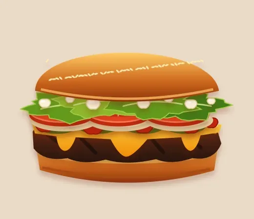
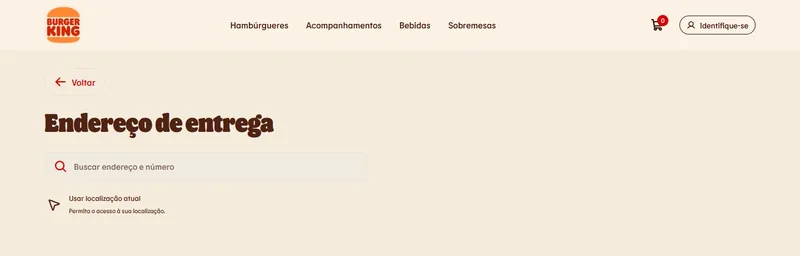
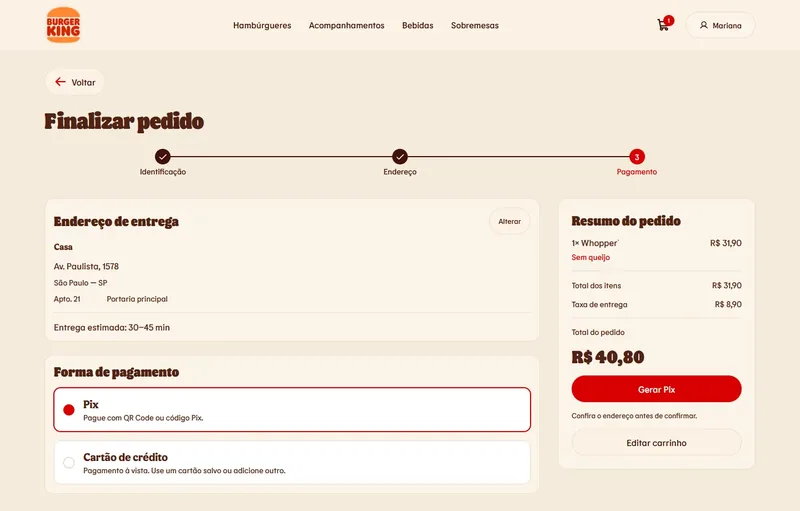
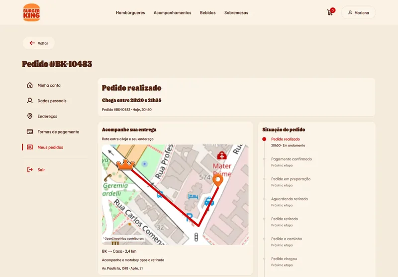
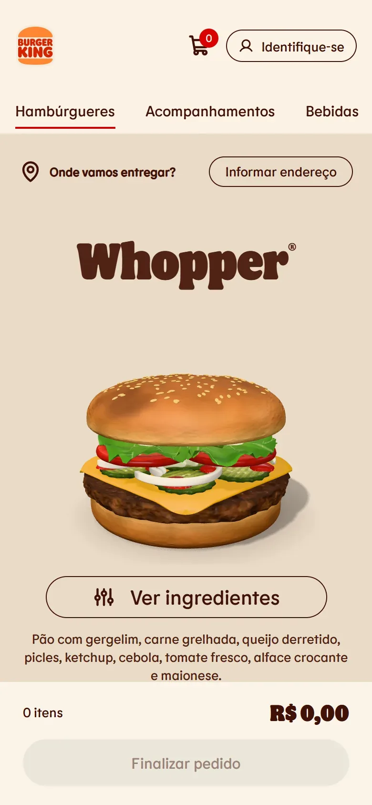
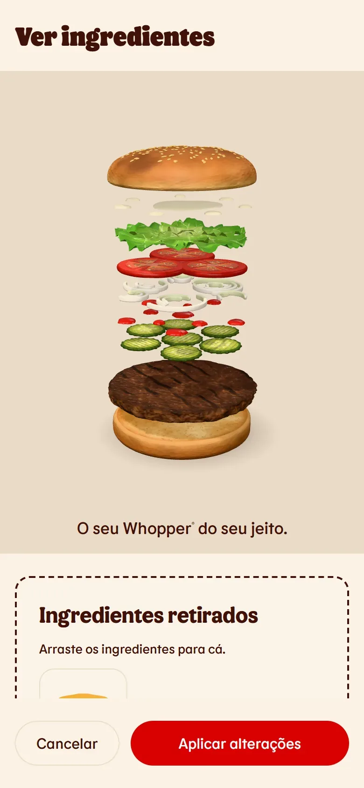

Cart
Each item shows what was taken out of it, and combo, drink and quantity can be edited in place. Removing an item can be undone.

A self-initiated redesign of fast-food delivery, focused on what it takes to place an order and nothing else.
This is a self-initiated study. It was not commissioned by or affiliated with Burger King, and it has not been validated with users.
The case in five words
Delivery apps often surround the order with coupons, offers and pop-ups. My hypothesis: a flow with only what's needed to order, that runs on any phone, is a calmer and more honest experience. This is a personal point of view, not a research finding.
The decisions in this case are mine. Design and code were produced through a fully AI-driven workflow. Whenever the AI fell short of what I intended, I made targeted adjustments in Figma to get the result I wanted.
There is no offers tab, no coupon field, no prize wheel and no unsolicited pop-up. The menu shows the product, its ingredients and its price, and the customer decides when to add it to the cart. Removing these prompts is deliberate: the flow should help people order what they came for, not push them to consume more.

Customers open the burger to see each ingredient as a separate layer. Taking one out moves it to a tray beside the burger, where it stays until they put it back or apply the change. Nothing is final until they apply it, so changing your mind costs one tap. The model shows which ingredients are in the recipe, not exact portions.
The 3D burger is there to explain the recipe, not to show off. Every burger is modeled by code, with no downloaded ingredient images, and the 3D part has a fixed weight and speed budget. Without WebGL, the same burger is drawn in SVG and every interaction still works. Motion is reduced when the system asks for it.
In lab tests with a 4× slower CPU, the 3D code weighed 159.5 KB gzipped and the first frame appeared in about 1.2 s. It has not been tested on physical phones.

WebGL

SVG fallback
Customers want to know whether delivery reaches them before creating an account. The delivery address can be chosen from the menu without confirming a phone number, and the app only speaks up when it doesn't deliver to that area. The phone number comes later, at checkout.

The prototype covers the whole journey: menu, customization, cart, checkout, order confirmation and order tracking, on desktop and mobile. Maps, sign-in and payments are simulated, with fixed data, so the flow can be explored without real services.
Each item shows what was taken out of it, and combo, drink and quantity can be edited in place. Removing an item can be undone.

Checkout follows three steps: identification, address and payment, with Pix or credit card. The order summary stays visible beside each step.

After confirmation, the customer follows the order through each status, with the delivery window and the route from the store to the address on a map. Statuses advance on simulated timing.

On phones, the page becomes a single column, and the main action stays fixed at the bottom of the screen.


The prototype is live. Nothing in it was tested with users, so treat it as a proposal to explore, not a proven result.
Open the prototype ↗